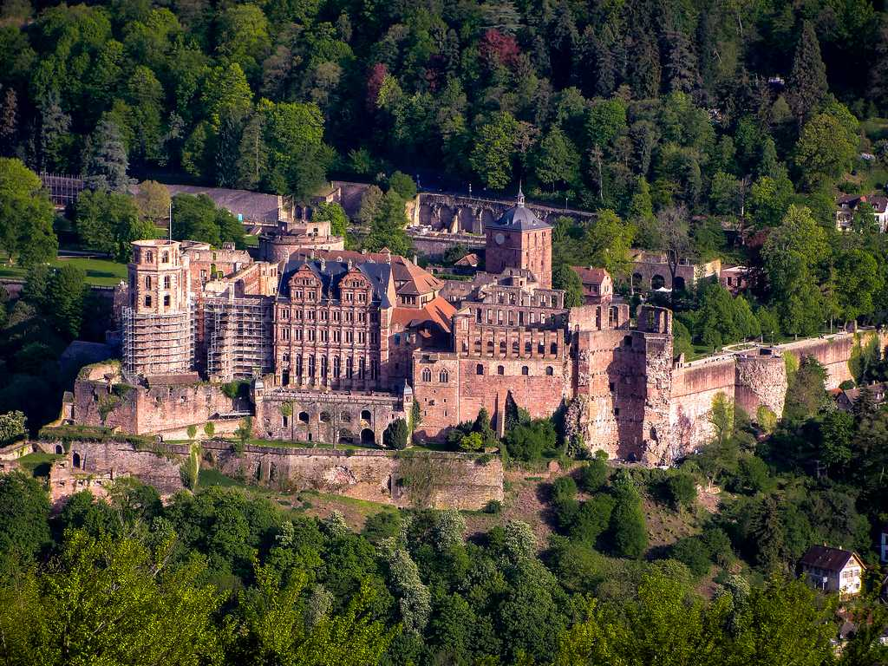
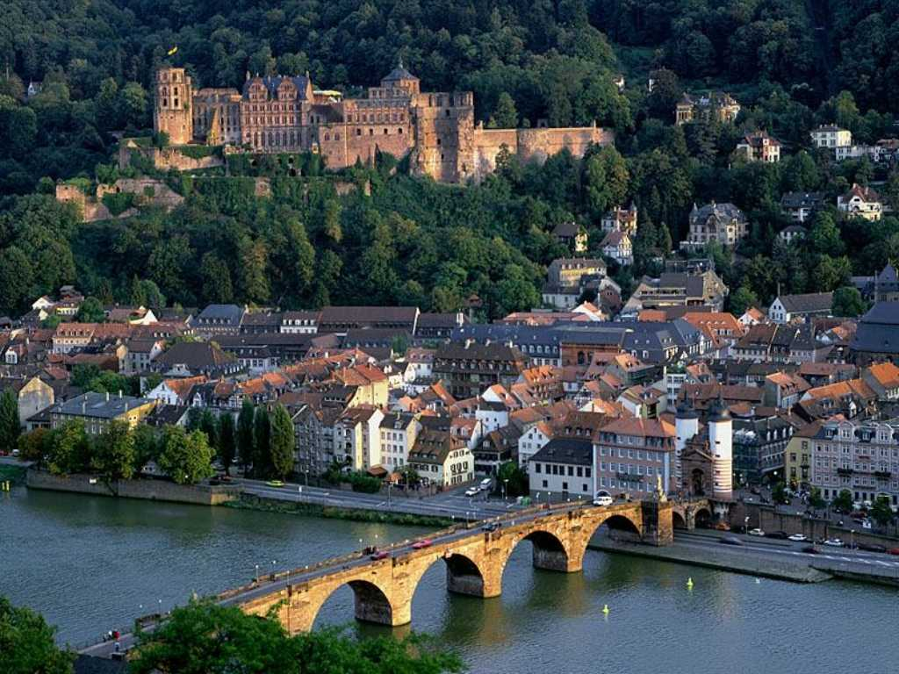
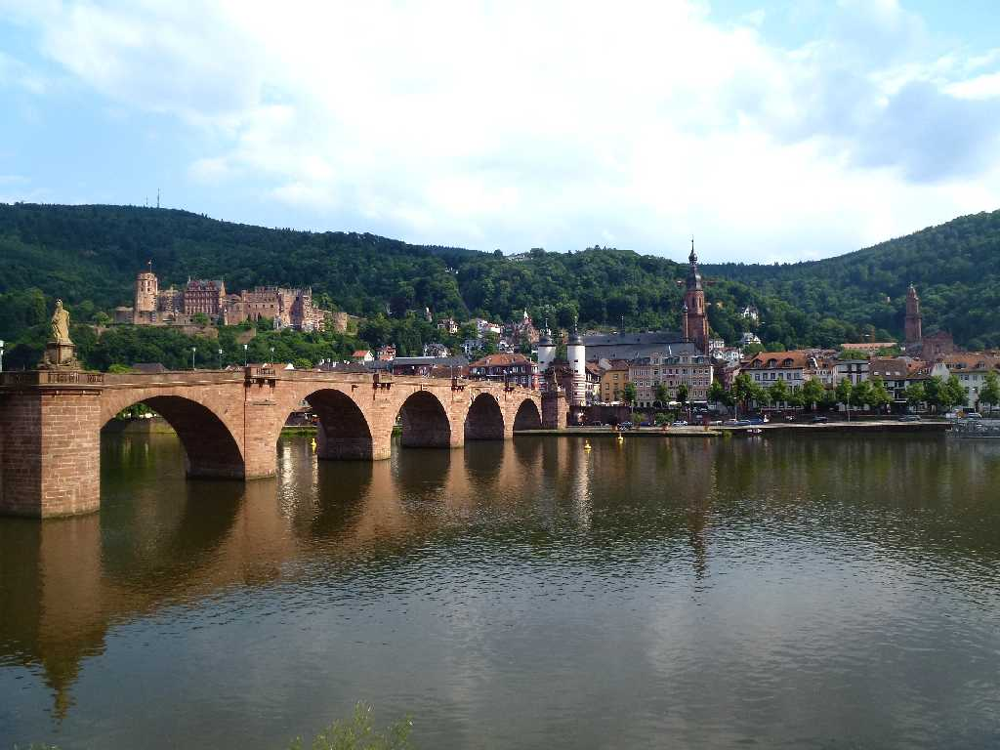
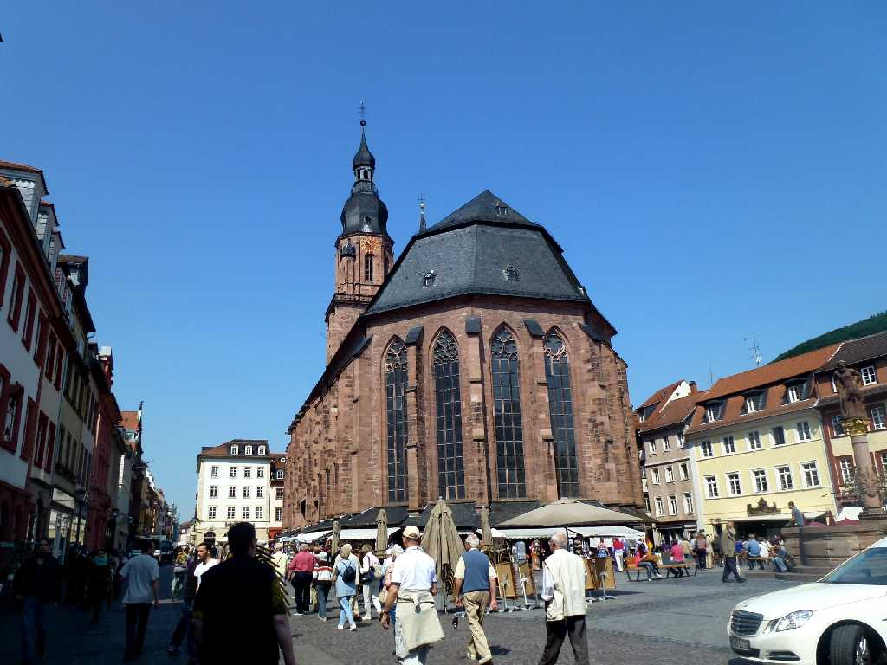
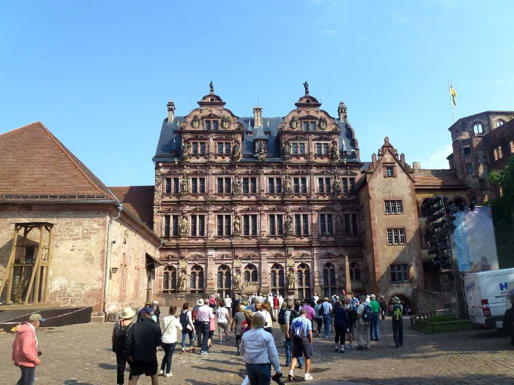
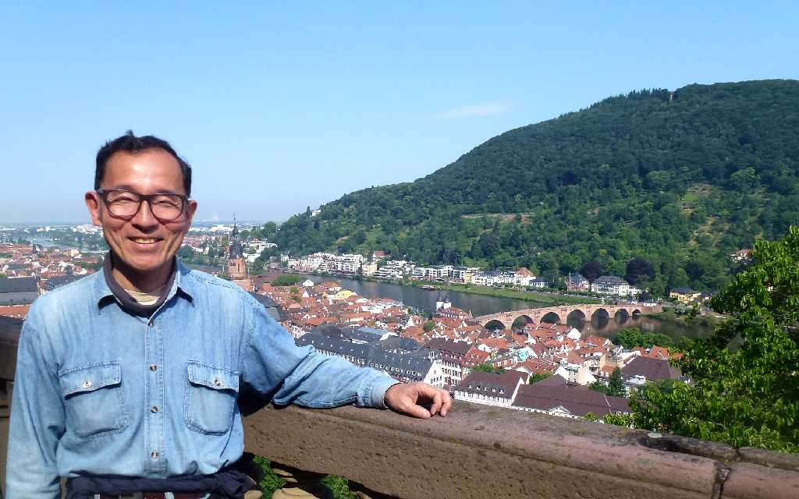
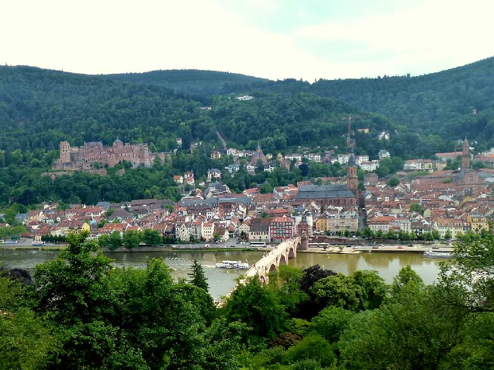
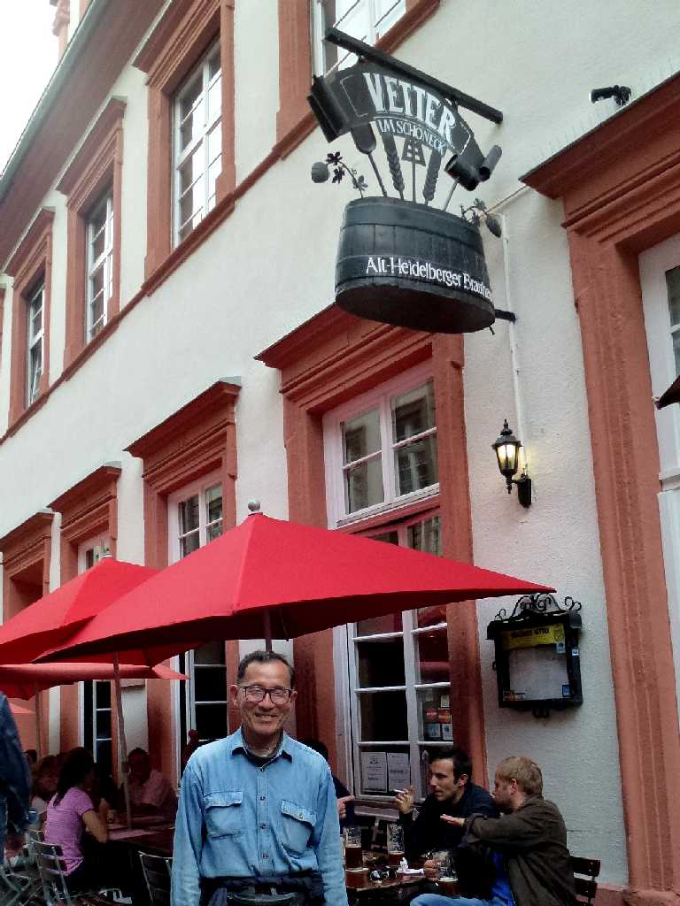

August 1973 August 1973 Heidelberg Castle
１３世紀に創られた中世最大のお城ハイデルベルク城

Heidelberg Castle
古城からの川に沿った古い街並みの眺めは歴史の深さを感じさせる

Alte Brücke Schloss Heiliggeistkirche Jesuitenkirche Heidelberg
学生時代以来約４０年ぶりの再訪問だが旧市街等はよく保存されている

Heiliggeistkirche Marktplatz

Schloss

June 2 2014 Schloss

Philosophenweg
哲学の道は４０年前より木が茂り眺めを妨げていた

June 2 2014 Vetter
最もアルコール度数の高い地ビールのお店でアルコール度数が１２％とワインやシャンパンと同じ 冷えた最初の一口１００ｍℓ程を一気に飲むと食道が熱く感じる